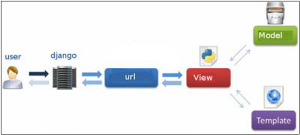

As you already know, Django is a Python web framework. And like most modern framework, Django supports the MVC pattern. First let's see what is the Model-View-Controller (MVC) pattern, and then we will look at Django’s specificity for the Model-View-Template (MVT) pattern.
MVC Pattern
When talking about applications that provides UI (web or desktop), we usually talk about MVC architecture. And as the name suggests, MVC pattern is based on three components: Model, View, and Controller. Check our MVC tutorial here to know more.
DJANGO MVC - MVT Pattern
The Model-View-Template (MVT) is slightly different from MVC. In fact the main difference between the two patterns is that Django itself takes care of the Controller part (Software Code that controls the interactions between the Model and View), leaving us with the template. The template is a HTML file mixed with Django Template Language (DTL).
The following diagram illustrates how each of the components of the MVT pattern interacts with each other to serve a user request −

The developer provides the Model, the view and the template then just maps it to a URL and Django does the magic to serve it to the user.
Разработчик работает только с шаблоном